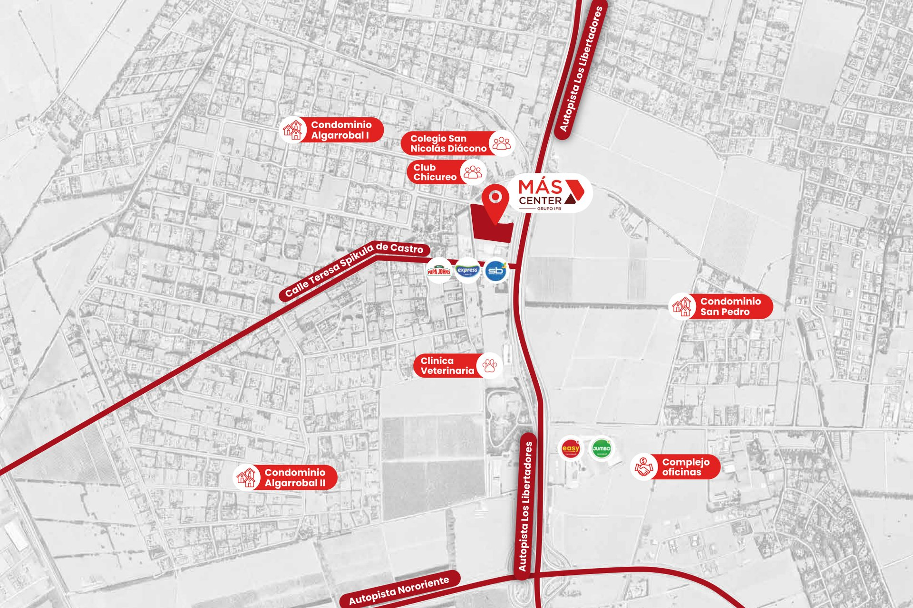

<!-- ════════════════════════════════════════════════════════════════════════
     SECCIÓN 05 — ACCESIBILIDAD ESTRATÉGICA + MAPA
     ────────────────────────────────────────────────────────────────────
     Vista previa:  vista-previa/05-*.jpg
     Archivos que usa:
       · recursos/iconos/acceso-1.png
       · recursos/iconos/acceso-2.png
       · recursos/iconos/acceso-3.png
       · recursos/imagenes/mapa.jpg
     Nota: El mapa es una imagen plana (mapa.jpg), NO un Google Maps embebido: lleva la
           gráfica de la diseñadora encima. No reemplazarlo por un iframe de Maps.
     ════════════════════════════════════════════════════════════════════
     Pega TODO este archivo dentro de un bloque «HTML personalizado».
     Antes tiene que estar pegado UNA sola vez 00-estilos-base.html.
     ════════════════════════════════════════════════════════════════════════ -->
<style>
/* ── ACCESIBILIDAD + MAPA ─────────────────────────────────────── */
.accesibilidad{display:grid;grid-template-columns:.86fr 1.14fr;background:var(--claro);position:relative}
.accesibilidad .bloque{background:var(--vino-osc);color:#fff;padding:clamp(50px,6vw,96px) clamp(28px,4vw,64px);
  border-radius:0 var(--radio) var(--radio) 0;position:relative;z-index:2}
.accesibilidad .bloque h2{font-size:clamp(1.9rem,3.6vw,3rem);font-weight:700;line-height:1.08}
.accesibilidad .bloque .sub{font-size:clamp(1rem,1.8vw,1.45rem);font-weight:300;
  color:rgba(255,255,255,.86);margin-top:2px}
.lista-acceso{margin-top:clamp(30px,4vw,54px);display:flex;flex-direction:column;gap:clamp(22px,3vw,38px)}
.item-acceso{display:flex;gap:20px;align-items:flex-start}
.item-acceso img{width:62px;height:62px;flex-shrink:0}
.item-acceso h3{font-size:1rem;font-weight:600;margin-bottom:5px}
.item-acceso p{font-size:.85rem;line-height:1.55;color:rgba(255,255,255,.82)}
.accesibilidad .mapa{position:relative;overflow:hidden;min-height:420px}
.accesibilidad .mapa img{width:100%;height:100%;object-fit:cover;object-position:left center}

</style>

<!-- ════════════ ACCESIBILIDAD + MAPA ════════════ -->
<section class="accesibilidad">
  <div class="bloque">
    <h2 class="fade-up">Accesibilidad<br>Estratégica</h2>
    <p class="sub fade-up d1">Y alto potencial de flujo</p>
    <div class="lista-acceso">
      <div class="item-acceso fade-up d1">
        
        <div>
          <h3>Ruta 57 General San Martín</h3>
          <p>Ubicación con alta exposición y excelente conectividad, sobre uno de los principales
            ejes de acceso a Colina.</p>
        </div>
      </div>
      <div class="item-acceso fade-up d2">
        
        <div>
          <h3>Entorno residencial consolidado</h3>
          <p>Rodeado de nuevos desarrollos habitacionales que impulsan una demanda permanente por
            comercio y servicios.</p>
        </div>
      </div>
      <div class="item-acceso fade-up d3">
        
        <div>
          <h3>Desarrollo comercial en expansión</h3>
          <p>El crecimiento planificado del sector favorece la llegada de nuevos operadores y
            fortalece la actividad comercial.</p>
        </div>
      </div>
    </div>
  </div>
  <div class="mapa fade-in">
    
  </div>
</section>
